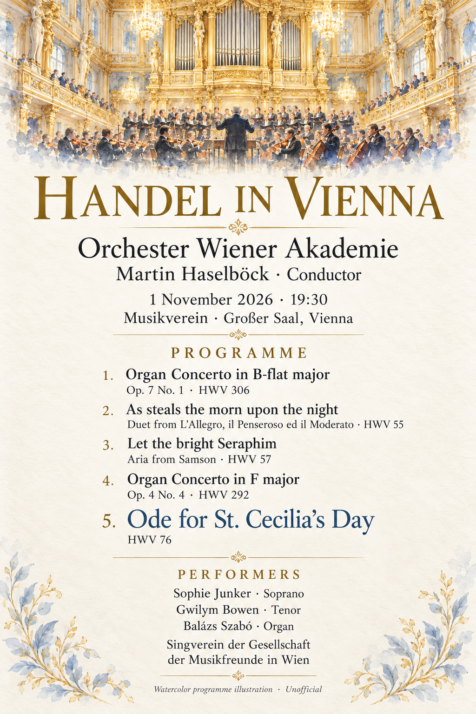
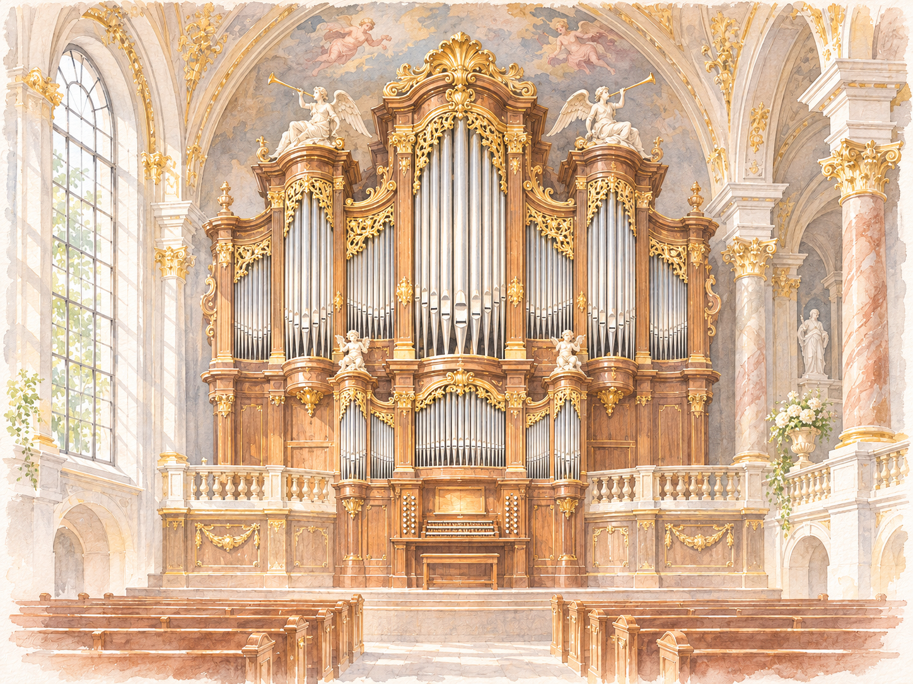
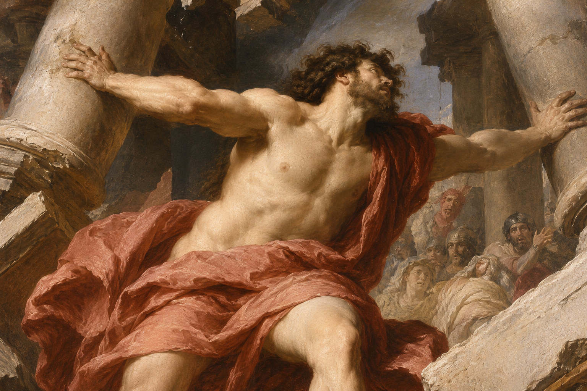
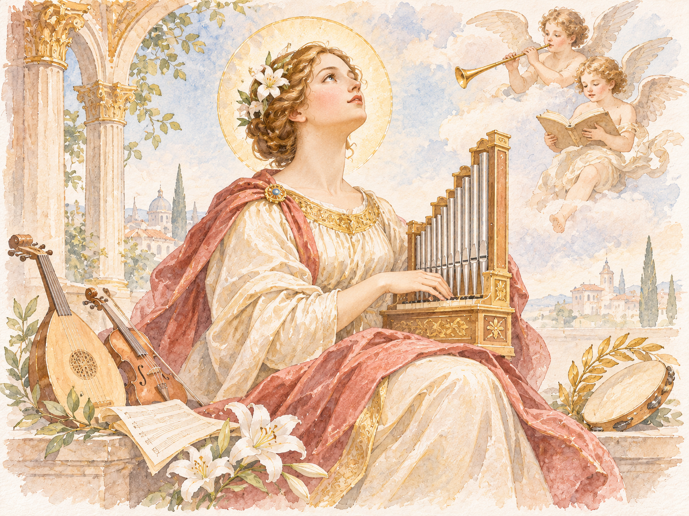
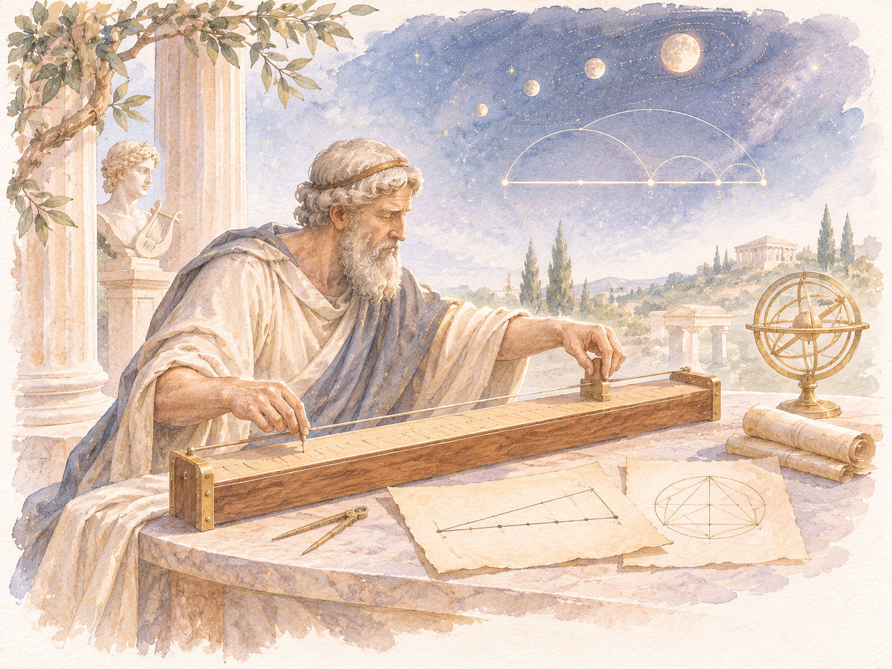
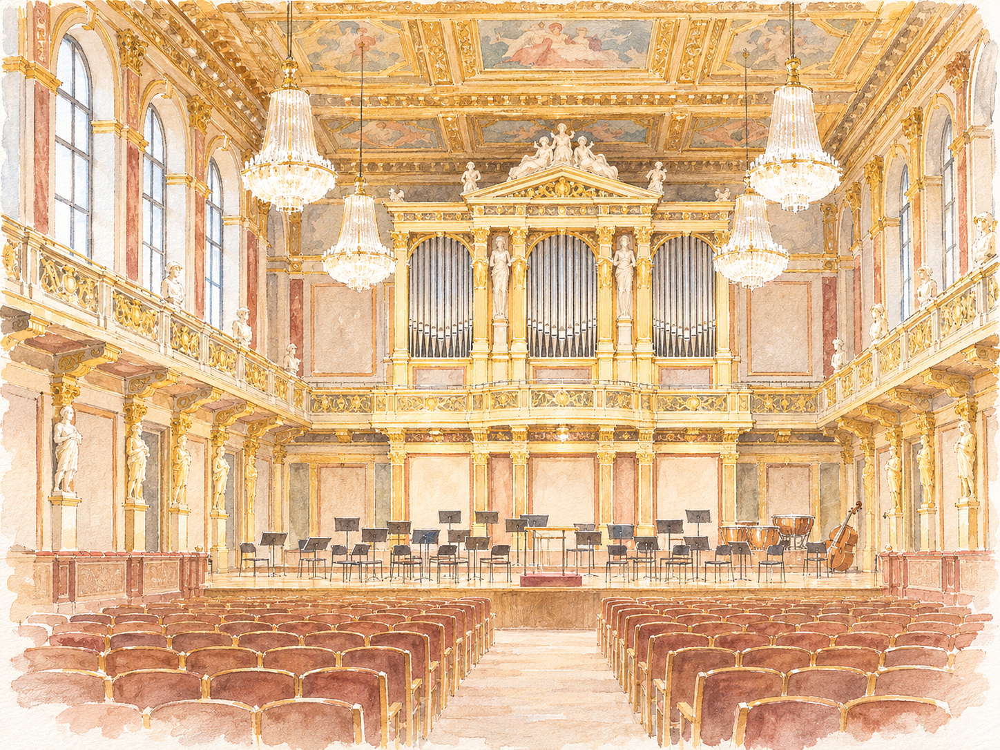

音樂、和諧與聖塞西莉亞的禮讚
Orchester Wiener Akademie 在 Martin Haselböck 指揮下，與管風琴家 Balázs Szabó、女高音 Sophie Junker、男高音 Gwilym Bowen 及維也納音樂之友協會合唱團共同演出。

本場從管風琴協奏曲、英語聲樂作品到神劇選曲，將韓德爾筆下的器樂華彩、聲樂對話與慶典性格並置。聆聽時不妨留意：獨奏與合奏如何相互照亮、兩個聲部怎麼交織，及音樂如何以不同質地表現光明、和諧與榮耀。
降 B 大調管風琴協奏曲，HWV 306

這首協奏曲由 Andante、Andante、Largo e piano 與 Bourrée 組成。韓德爾的管風琴協奏曲不是單純的炫技展現：管風琴有時以華麗音型突出，有時融入弦樂團和聲，形成靈活的問答。
As steals the morn upon the night
這首二重唱選自 1740 年的英語聲樂作品 L'Allegro, il Penseroso ed il Moderato, HWV 55。作品藉晨光逐漸取代夜色的意象，描寫理性使心靈恢復明晰與平衡。
兩個歌唱聲部交替、接續、彼此重疊，與器樂線條一同描繪晨光展開。可注意一個聲部開始後另一聲部何時加入，以及兩位歌者如何安排呼吸、重音與樂句終點。
YouTube：As steals the morn upon the night ↗
延伸欣賞：Eternal source of light divine
這首選自《安妮女王生日頌歌》HWV 74，以悠長抒情旋律和器樂獨奏的細膩對話，營造光線逐漸展開的純淨、莊嚴氣氛。
Let the Bright Seraphim

《參孫》HWV 57 是韓德爾根據舊約人物參孫故事寫成的英語神劇。這首詠嘆調位於作品近結尾之處，以輝煌聲響頌揚英雄。
高亢小號與女高音不是伴奏與主旋律的單向關係，而像兩個相互競逐的角色：一方奏出鮮明有力音型，另一方以華麗聲樂線條回應。
聖塞西莉亞與宇宙和諧

聖塞西莉亞常被視為音樂守護聖人；韓德爾的相關作品將音樂與和諧、創造及慶典連在一起。從畢達哥拉斯式的宇宙和諧想像，到管風琴、合唱與獨唱的實際聲響，整場節目以不同尺度回應「音樂如何安排世界」這個古老問題。

